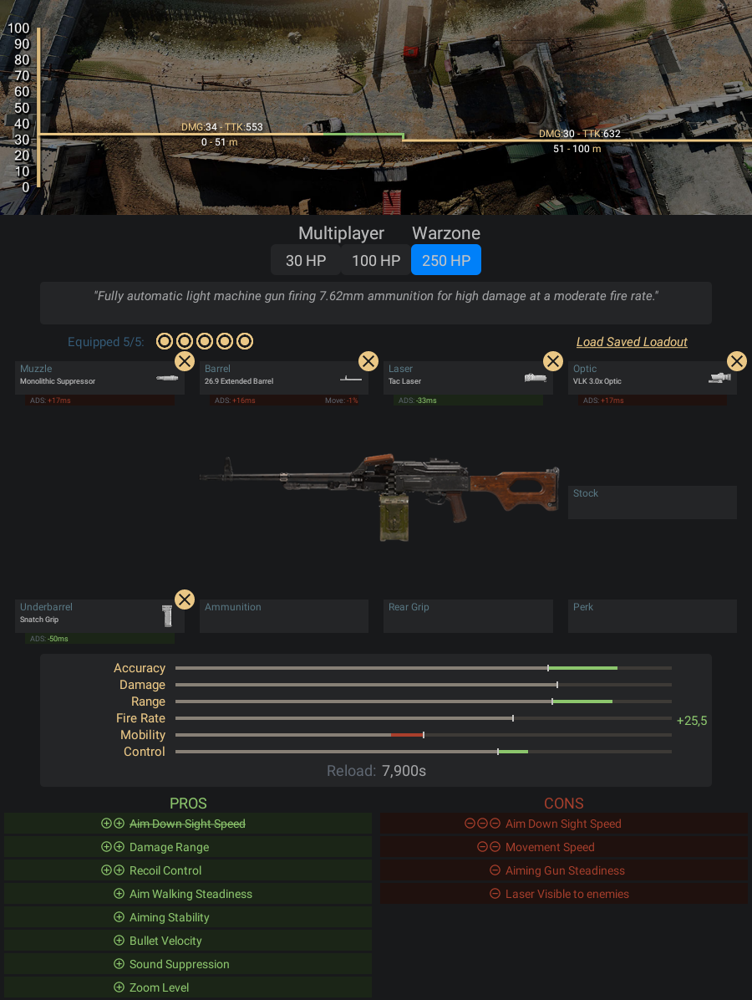

Metralhadora leve totalmente automática que dispara munição 7,62mm para dano alto
com cadência moderada.
- Pontos Positivos:
- -Abaixo da Kilo 141 essa arma tem o recuo mais fácil de ser controlado
- -Dano altíssimo para as médias e longas distâncias
- -Tem 100 bala no pente, então você pode ser um pouco vesgo e errar
- bastante tiro
- -O tempo de puxar a mira é ligeiro dessa arma, e também é mais ligeiro comparado à
- vários outros fuzis de assalto
- Pontos Negativos:
- -O tempo de recarregamento é demorado, você terá que ter bastante paciência
- quando as suas balas acabarem
Informações e dicas de como fazer uma classe da PKM:
Acessórios para PKM:
- Boca - Supressor Monolítico
- Cano - Cano Extendido 26,9
- Lente - VLK 3,0x
- Laser - Laser Tático
- Acoplamento - Empunhadora Firme